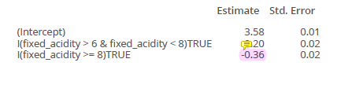
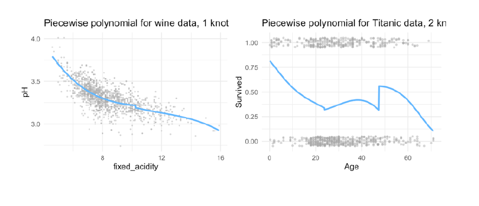
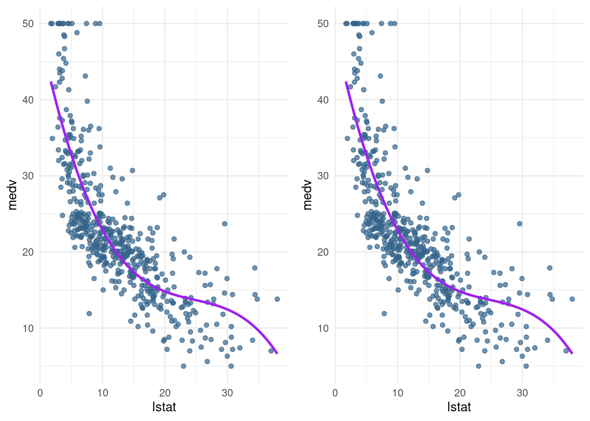
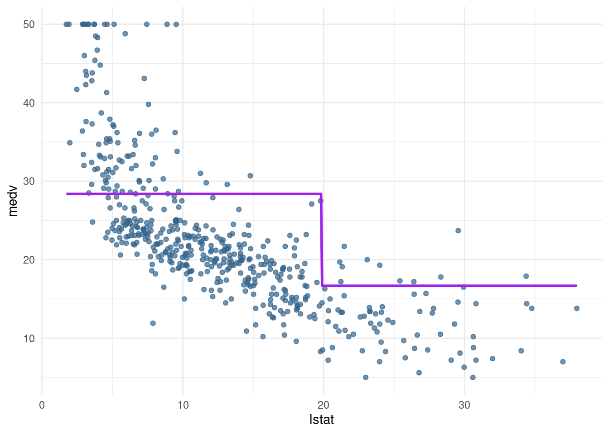

library(MASS)
library(splines)
library(ISLR)
library(tidyverse)
library(gridExtra)6 Beyond linearity
6.1 Readings
Chapter 7: Beyond linearity
6.2 Why extend the linear model?
- More flexibility, while still being able to interpret the outcomes of the model.
- In (even) more flexible models (such as Random Forests, will be discussed in two weeks) interpretability is limited
- easy to code, only one line!
- Polynomial regression extends the linear model by adding extra predictors, obtained by raising each of the original predictors to a power. For example, a cubic regression uses three variables, X, X2, and X3, as predictors. This approach provides a simple way to provide a nonlinear fit to data.
- Step functions cut the range of a variable into K distinct regions in order to produce a qualitative variable. This has the effect of fitting a piecewise constant function.
- Regression splines are more flexible than polynomials and step functions, and in fact are an extension of the two. They involve dividing the range of X into K distinct regions. Within each region, a polynomial function is fit to the data. However, these polynomials are constrained so that they join smoothly at the region boundaries, or knots. Provided that the interval is divided into enough regions, this can produce an extremely flexible fit. Smoothing splines are similar to regression splines, but arise in a slightly different situation. Smoothing splines result from minimizing a residual sum of squares criterion subject to a smoothness penalty.
- Local regression (LOESS) is similar to splines, but differs in an important way. The regions are allowed to overlap, and indeed they do so in a very smooth way.
- Generalized additive models allow us to extend the methods above to deal with multiple predictors.
6.3 Basic functions and linear regression
General idea:
- We have a non-linear relationship between X and Y.
- We replace X by \(b_1(x), b_2(x)\) etc., choosing the \(b_j()\) so the relationship between \(y\) and \(b_j(x)\) is linear
- we fit our linear regression \[ f(x) = \beta_0 b_1(x) + \beta_1 b_2(x) + \beta2 b_j(x) \]
- we can get the \(\beta\) s estimate standard errors etc.
The basis function \(b()\) are fixed and known. Linear regression is a special case where \(b_0(x) = 1\) and \(b_1(x) = x\) because the intercept \(\beta_0\) does not interact with \(x\) and we only have one \(x\) - Linear regression:
\[ y = \beta_0 + \beta_1x + \epsilon \]
6.4 polynomial regression
\[ y = \beta_0 + \beta_1x + \beta_2x^2 + \dots + \beta_d^d + \epsilon \]
\(b_0(x) =1\) is the intercept
\(d\) stands for the degree of freedom (quantity that summarizes the flexibility of a curve) - for polynomial regression usually not greater than 3 or 4, because then it would be too flexible or use cross-validation to choose . - for each extra degree in the polynomials, the linear prediction line is ‘allowed’ to make one extra bend.
6.4.1 Interpretations of coefficients
- Typically, we are not so interested in the values of the regression coefficients \(\beta_0\), but more in: The predicted outcome for each value of \(x_i\) (i.e., the fitted function values) How much increases when we increase \(x\) (i.e., the marginal effect)
Therefore, marginal effect plot
- The plot shows, how the rate of the curve changes with increasing x.
- in linear models, the marginal effect stays the same, because the gradient is always the same
- with each step in
fixed_acidity/ in \(x\), the outcome will decrease by -0-06-
- in quadric regression:
- With every extra point on fixed acidity, the pH is predicted to go down with 0.18 points.
- However, as fixed acidity increases, the negative effect levels off with 0.01 points per point on fixed \(acidity^2\)
- With every extra point on fixed acidity, the decrease on pH depends on the level of fixed acidity
- The marginal effect is the derivative (Ableitung) of f(x) (i.e. the slope of the curve at each point)
- cubic regression:
- With a fixed acidity of 0, the predicted pH equals 5.50
- With every extra point on fixed acidity, the pH is predicted to go down with 0.57 points
- This negative effect levels off with 0.05 points per point on fixed \(acidity^2\)
- As acidity increases, the ‘levelling off’ effect is negated with 0.001 points per point on fixed \(acidity^3\)
Example: how to interpret?

- at 10 the second estimated parameter works, so for an increase in fixed_acidity in one, the estimate is 0.049
- for 0.01 you have then 0.0049
6.4.2 use also for logistic regression
\[ Pr(y_i = 1| X) = \frac{e_{\beta_0 + \beta_1x_i + \beta_2x_i^2 + \dots + \beta_dx_i^d}} { 1+e_{\beta_0 + \beta_1x_i + \beta_2x_i^2 + \dots + \beta_dx_i^d}} \]
in R
poly() function, to specify your polynomial inside a formula for a linear (or logistic) regression as such:
Here three degree polynomial
mod <- lm(pH ~ poly(fixed_acidity, degree = 3), data = winequality_red)
7 Advatages & Disadvantages
Advantages
- Simple model, easy to understand
- some relationships are actually polynomial
Why are not polynomials not good enough?
- Polynomials have notorious ‘tail’ behavior → dangerous to extrapolate predictions outside what is observed in the data! points at the end of the curves are really bad to extrapolate! Curves go to much in one direction!
- They are non-local: the behavior of a polynomial at a point \(x_i\) can depend strongly on points far \(x_i\)from .
Better approach: Splines But before that you have to understand stepwise functions and piecewise polynomials
8 Stepwise functions = piecewise constant models
Better approach than polynomials, because do not distort the ends. Is problematic, if you want to predict values outside the test data range!
Using polynomial functions of the features as predictors in a linear model imposes a global structure on the non-linear function of X. We can instead use step functions in order to avoid imposing such a global structure. Here step we break the range of X into bins, and fit a different constant in each bin. This amounts to converting a continuous variable into an ordered categorical variable.
Instead of using polynomials, we can also cut the variable into distinct regions (bins) → defining this regions by set a certain threshold!
We fit separate values for different regions of \(X\), for example:
- sorts the observations in one of this exclusive categories -> each observations in category bigger than or less than the threshold
Second option, we use a intercept, that is our baseline and is a dummy variable
- set a dummy variable, an indicator, with range of 0 or 1 when I is true, and zero, if not! In this case, lines are continous, not broken into two
8.1 Interpretation of coefficients
For example:
st2_logb <- lm(pH ~ I(fixed_acidity > 6 & fixed_acidity < 8) + I(fixed_acidity >= 8), data = winequality

6 and 8 are chosen as thresholds (In real practice, you do not choose 6 and 8 by cut the curve by certain steps, like every 3 points in X I compute another estimate)
for example, if I want to predict for X=12, I use this estimate! Because the threshold here is >= 8. If I want to predict 7, I use the 0.2 estimate.
Interpretation of the coefficients: - Intercept: Value of before the first knot - I(fixed_acidity > 6 & fixed_acidity < 8): Value of between the first and second knots (in relationship to the intercept) - I(fixed_acidity >= 8): Value of after the second knot (in relationship to the intercept)
- in this model accumulated!
- if you have model like this, we have estimates that accumulate! So for X=12 we have to use -021 and -0.15
- Each function gets activated at a different break, adding to the previous.
8.1.1 Advatages & Disadvantages
Advantages: - Simple - Popular in epedemiology and biostatistics - Useful when there are natural cutpoints that are of interest (e.g., students under and over 18) - Interpretation is easy: the coefficients show the predicted value - They are local: in step functions, regression coefficients only influence outcomes in a specific region, while with polynomials the regression coefficients influcence the predicted outcome for all ranges of
Disadvantages: - They are not continuous
in R
Number of breaks (or and where to cut is decided by the user.
In R: cut(predictor, c(breaks))
When the location of the breaks is not specified, the breaks are spaced evenly
#use cut
pw2_mod <- lm(pH ~ cut(fixed_acidity, breaks = c(0,6,8,14)), data = winequality_red)
#use I
new_mod <- lm(pH ~ I(fixed_acidity > 6) + I(fixed_acidity > 8), data = winequality_red)8.2 Dicontinuous piecewise polynomials
- Combination of polynomial regression and step function:
- We fit separate low-degree polynomials over different regions of X, for example:

- parameters \((d+1)(K+1))\) where K= numbers of knots / breaks k
- if you have one break, you have two number of polynomials
- using more knots means more flexible piecewise polynomial functions, because we subset the data in \(x_i < \xi\) and in \(x_i >= \xi\)
- the polinomials are indicated by the second number, so \(\beta_01\) is the intercept of the first regression line, \(\beta_02\) is the intercept for the second regression line. So we have two cubic regression lines with each 3 degrees of freedom that are merged into one.
- If maximum degree is 1 = we fit linear functions
- If maximum degree is 3 = cubic polynomials

8.2.1 Advatages & Disadvantages
Advantage: more flexible than step functions
Disadvantage: still discontinous
Solution: Splines
8.3 Splines
We add constraints to the former piecewise polynomials: 1. Splines have a maximum amount of continuity: The \(d- 1\) derivatives are constrained to be continuous at the knot as well. For example, if we use a cubic function \(( d= 3)\), we force the \(1\) and \(2\) derivative to be continuous as well → very important! 2. This means that cubic splines are not only continuous, but also have the same slope (1 derivative) and curvature (2 derivative)
The following image shows, why the spline is the best solution:
- piecewise cubic is not continuous, we have two intercepts
- removing this intercept, in fact we have a continuous curve, but it looks not very natural
- in rhe cubic spline, we have added the two constraints: at the threshold ‘age=50’ both derivates are continuous and the curve is also very smooth!
- in doing this, we restrict the number of degrees of freedom: Each constraint that we impose on the piecewise cubic polynomials effectively frees up one degree of freedom, by reducing the complexity of the resulting piecewise polynomial fit. So in the top left plot, we are using eight degrees of freedom, but in the bottom left plot we imposed three constraints (continuity, continuity of the first derivative, and continuity of the second derivative)
- In general, a cubic spline with K knots usesa total of 4 + K degrees of freedom.
- in the right lower panel we have a linear spline, which is also continuous at ‘age=50’
- The general definition of a degree-d spline is that it is a piecewise degree-d polynomial, with continuity in derivatives up to degree d − 1 at each knot. Therefore, a linear spline is obtained by fitting a line in each region of the predictor space defined by the knots, requiring continuity at each knot.
Fore splines we use a truncated basis function.
- we estimate two different regression lines, seperated by the threshold \(\xi\)
- first linear regression use all observations, then add a second regression to it (like in the stepwise) at a certain threshold \(\xi\). Problem now are the breaks!
- therefore, we restrict the number of \(d\) in performing a least squares regression with an intercept and \(d+K\) predictors to have the form of \(X, X^2, X^3\), \(h(X,\xi_1),h(X,\xi_2), \dots ..., h(X,\xi_3)\), where \(\xi\) are the knots
- so we have a formula
- for a cubic spline we have then 4 degrees of freedom, because the intercept is also one: \(b_0(x) = Intercept 1, b_1(x)= x, b_2(x)= x^2, b_3(x)=x^3\) where it is \(b_{d+k}(x) = (x-\xi_k)_+^d for k=1, \dots, K\)
\[ f(x) = \beta_0 + \beta_1x_i + \beta_2(x_i-\xi_k) \] Very common to use the cubic splines, because 1. & 2. derivate are smooth, continuous, same slope, same curvature (Krümmung, Wölbung) and going past cubic dies not get much scmoother-looking curves
What happens at the treshold to make the spline continuous and smooth?
\[ \begin{align*} f(x) & = \beta_0 + \beta_1\xi \\ Before & \xi (e.g. at \xi - \delta) \\ f(x) & = \beta_0 + \beta_1\xi - \beta_1\delta \\ After & \xi (e.g. at \xi + \delta) \\ f(x) & = \beta_0 + \beta_1\xi - (\beta_1 + \beta_2)\delta \\ \end{align*} \]
Truncaded power basis function

8.3.1 Advatages & Disadvantages
Pro: Continuous and smooth!
Con: Prediction outside the range of the data can be wild
in R
library(splines)
bs3_l_mod <- lm(pH ~ bs(fixed_acidity, knots = c(6,8)), data = winequality_red)
bs3_l_log <- glm(Survived ~ bs(Age, knots = c(18, 64)), data = titanic, family = 'binomial')
(pred_plot(bs3_l_mod ) + ggtitle("cubic spline for wine data, 2 knots") +
pred_plot2(bs3_l_log ) + ggtitle("cubic spline for Titanic data, 2 knots"))
Marginal effects:
bs3_l_mod <- lm(pH ~ bs(fixed_acidity, knots = median(fixed_acidity)), data = winequality_red)8.3.2 Constraining parameters further: natural splines
Unfortunately, splines can have high variance at the outer range of the predictors—that is, when X takes on either a very small or very large value. Figure 7.4 shows a fit to the Wage data with three knots. We see that the confidence bands in the boundary region appear fairly wild. A natural spline is a regression spline with additional boundary constraints: the function is required to be linear at the boundary (in the region where X is spline smaller than the smallest knot, or larger than the largest knot). This additional constraint means that natural splines generally produce more stable estimates at the boundaries. In Figure 7.4, a natural cubic spline is also displayed as a red line. Note that the corresponding confidence intervals are narrower.
- extrapolates linearly boundary knots
- beyond the range of the data, the function goes off linerarly
- This adds extra constraints, and allows us to put more internal knots for the same degrees of freedom as a regular cubic spline.
- Parameters \((d+1) + K-2\) (two constrains in the boundaries) → removing degrees of freedom
in R
Using ‘splines’ and ‘ns(x, …)’
ns3_l_mo <- lm(pH ~ ns(fixed_acidity, knots = c(6, 8), data = winequality_red)
ns3_l_log <- glm(Survived ~ ns(`Age`, knots = c(18, 64)), data = titanic, family = 'binomial')- we de not have the decrease at the end. Make it more linear, what is good because ends are often wild.
→ to use, when the test data set gets out of the range of observations and are kind of outliers. → more simple models, less parameters!
8.4 Choosing K and the placements of knots
Various strategies:
Given the theoretical framework of the data at hand, there are logical, natural places for the knots
Given the data, place more knots in places where we feel the function might vary most rapidly, and to place fewer knots where it seems more stable. Very data dependent!
More common: place knots in a uniform fashion. That is:
Decide on \(K\) (the number of knots) and place them at the quantiles of the observed \(X\). For example, if we choose 1 knot, we can place it at the median of \(X\)
Deciding on \(K\) : use cross-validation
in splines is more about making predictions, than to explain and estimate exact parameters, so more parameters do not harm! Add all!
8.4.1 Smoothing splines
Even more advanced method, for fitting splines without having to worry about knots. - Basic idea similar to Ridge regression: - add a roughness penalty: Minimize \(MSE + \lambda penalty\) - Penalty is \(\int f''(r)^2\): Sum of change in the curvature
In fitting a smooth curve to a set of data, what we really want to do is find some function, say g(x), that fits the observed data well: that is, we want RSS/ MSE to be small. However, there is a problem with this approach. If we don’t put any constraints on g(xi), then we can always make RSS zero simply by choosing g such that it interpolates all of the yi. Such a function would woefully overfit the data—it would be far too flexible. What we really want is a function g that makes RSS small, but that is also smooth. How might we ensure that g is smooth? There are a number of ways to do this. A natural approach is to find the function g that minimizes the MSE, where \(\lambda\) is the nonnegative tuning parameter.
- How many knots? One for each \(x_i\), controll smoothness through penalty
- \(f(x)\) ends up being a piecewise cubic polynomial and continuous first and second derivatives
- the smaller \(\lambda\) the more wiggly (wackelig, sich schlangend) the function, \(\lambda\) → \(\infty\) \(g(x)\) becomes linear
8.4.1.1 Advantages
- No need to define the number of knots
- \(\lambda\) can be calculated easily due to some math magic without the need of cross-validation (i.e. faster)
- Less “effective degrees of freedom” (parameters)#
in R
# Cross validation to find best lambda
ss_mod1 <- smooth.spline(winequality_red$fixed_acidity, winequality_red$pH, cv = TRUE)
# Effective degrees of freedom
ss_mod1$df
## [1] 10.61691
#Fit linear model
ss_mod <- gam(pH ~ s(fixed_acidity, df = 10.6), data = winequality_red)8.5 Local regression
- mainly used to predict trends
- The idea of local regression can be generalized in many different ways. In a setting with multiple features X1,X2, . . . ,Xp, one very useful generalization involves fitting a multiple linear regression model that is global some variables, but local in another, such as time. Such varying coefficient models are a useful way of adapting a model to the most recently gathered data.
- Local regression is a different approach for fitting flexible non-linear functions, which involves computing the fit at a target point x0 using only the nearby training observations.
- In this figure the blue line represents the function \(f(x)\) from which the data were generated, and the light orange line corresponds to the local regression estimate \(\hat{f}(x)\).
Note that in Step 3 of Algorithm 7.1, the weights Ki0 will differ for each value of x0. In other words, in order to obtain the local regression fit at a new point, we need to fit a new weighted least squares regression model by minimizing (7.14) for a new set of weights. Local regression is sometimes referred to as a memory-based procedure, because like nearest-neighbors, we need all the training data each time we wish to compute a prediction. In order to perform local regression, there are a number of choices to be made, such as how to define the weighting function K, and whether to fit a linear, constant, or quadratic regression in Step 3. (Equation 7.14 corresponds to a linear regression.) While all of these choices make some difference, the most important choice is the span s, which is the proportion of points used to compute the local regression at x0, as defined in Step 1 above. The span plays a role like that of the tuning parameter λ in smoothing splines: it controls the flexibility of the non-linear fit. The smaller the value of s, the more local and wiggly will be our fit; alternatively, a very large value of s will lead to a global fit to the data using all of the training observations. → crossvalidation to choose s or direct specification.
in R
use the funcion loess
8.6 Generalized additive models (GAM)
Generalized additive models (GAMs) provide a general framework for extending a standard linear model by allowing non-linear functions of each of the variables, while maintaining additivity. Just like linear models, GAMs can be applied with both quantitative and qualitative responses.
Use & Pros:
- When using the above methods on a multiple regression (i.e., more than 1 predictor) problem, we can extend them using GAM (generalized additive models)
- Allows for flexible nonlinearities in several variables
- Addition of smooth functions
- quite easy to use
- also possible to mic methods over different predictors within the same model, e.g. a model that is global on some variables, - local in other (e.g. time)
Cons:
The main limitation of GAMs is that the model is restricted to be additive. With many variables, important interactions can be missed. However, as with linear regression, we can manually add interaction terms to the GAM model by including additional predictors of the form Xj × Xk. In addition we can add low-dimensional interaction functions of the form fjk(Xj,Xk) into the model; such terms can be fit using two-dimensional smoothers such as local regression, or two-dimensional splines (not covered here)
in R
library(gam)
#Example 1: more than one natural spline
R: lm(wage ∼ ns(year, df = 5) + ns(age, df = 5) + education)
# Example 2: different methods
m(wage ∼ ns(year, df = 5) + lo(age, span = 0.5) + education)8.7 in R
In this lab, we will learn about nonlinear extensions to regression using basis functions and how to create, visualise, and interpret them. Parts of it are adapted from the labs in ISLR chapter 7. You can download the student zip including all needed files for lab 6 here.
One of the packages we are going to use is splines. For this, you will probably need to install.packages("splines") before running the library() functions, however depending on when you installed R, it may be a base function within your library.
Additionally this lab will use lots of functions from the tidyverse package dplyr. Therefore, if you are struggling with there usage, please review the guidance in the dplyr basics tab.
Median housing prices in Boston do not have a linear relation with the proportion of low SES households. Today we are going to focus exclusively on prediction.
Boston %>%
ggplot(aes(x = lstat, y = medv)) +
geom_point() +
theme_minimal()First, we need a way of visualising the predictions. The below function pred_plot() does this for us: the function pred_plot() takes as input an lm object, which outputs the above plot but with a prediction line generated from the model object using the predict() method.
- Identify what each line of code does within the function
pred_plot(). Next, using # annotate what each line does within the function.
hint: You can use the function print() to output and investigate what lines within the function are doing.
pred_plot <- function(model) { #defines the function, needs model as an argument
x_pred <- seq(min(Boston$lstat), max(Boston$lstat), length.out = 500) # set the x value for pred from the lowest lstat value to the highest. We now get a vector with 500 values from the lowest lstat to the highest. The numbers are generated randomly, so we have simulated data.
y_pred <- predict(model, newdata = tibble(lstat = x_pred)) #we predict the numeric outcome for y based on model we have defined and use for the prediction the randomly generated data x_pred
Boston %>% #we set the data that we want to use
ggplot(aes(x = lstat, y = medv)) + #we define the asthetics and map them
geom_point(alpha= 0.7, color= "steelblue4") + #we want a scatterplot, so we define the associated geom
geom_line(data = tibble(lstat = x_pred, medv = y_pred), size = 1, col = "purple") + #we add a line for the predicted y on the predicted x data
theme_minimal() # we define a nice theme
}- Create a linear regression object called
lin_modwhich modelsmedvas a function oflstat. Check if the prediction plot works by runningpred_plot(lin_mod). Do you see anything out of the ordinary with the predictions?
lin_mod <- lm(medv ~ lstat, data= Boston)pred_plot(lin_mod)Warning: Using `size` aesthetic for lines was deprecated in ggplot2 3.4.0.
ℹ Please use `linewidth` instead.
We can see that the predictions do not perform well for the low SES households and the very high SES households. Further, the line seems to be too high in the middle, it seems like it is pushed up because of the many observations with low lstat and high medv.
→ linear regression underfits the data, is too simple to grasp. Too less variance explained
8.7.1 Polynomial regression
The first extension to linear regression is polynomial regression, with basis functions \(\beta_{j}(x_{i}^{j})\) (ISLR, p. 270).
- Create another linear model
pn3_mod, where you add the second and third-degree polynomial termsI(lstat^2)andI(lstat^3)to the formula. Create apred_plot()with this model.
pn3_mod <- lm(medv ~ poly(lstat,3), data= Boston) #in this case linear combination of the variables lstat and the polynoms
coef(pn3_mod) (Intercept) poly(lstat, 3)1 poly(lstat, 3)2 poly(lstat, 3)3
22.53281 -152.45955 64.22724 -27.05110 or the other way with the wrapper function I()
pn3_mod2 <- lm(medv ~ lstat + I(lstat^2) + I(lstat^3), data= Boston)
coef(pn3_mod2) (Intercept) lstat I(lstat^2) I(lstat^3)
48.649625342 -3.865592779 0.148738477 -0.002003868 The function poly() can automatically generate a matrix which contains columns with polynomial basis function outputs.
plot_raw <- pred_plot(pn3_mod2)
plot_raw- Play around with the poly() function. What output does it generate with the arguments
degree = 3andraw = TRUE?
pn3_mod.t <- lm(medv ~ poly(lstat,3, raw= TRUE), data= Boston) #in this case linear
coef(pn3_mod.t) #in this case we obtain the variables directly, so equal to the selve written function (Intercept) poly(lstat, 3, raw = TRUE)1
48.649625342 -3.865592779
poly(lstat, 3, raw = TRUE)2 poly(lstat, 3, raw = TRUE)3
0.148738477 -0.002003868 Play aroung with poly
poly(1:5, degree= 3, raw=TRUE) 1 2 3
[1,] 1 1 1
[2,] 2 4 8
[3,] 3 9 27
[4,] 4 16 64
[5,] 5 25 125
attr(,"degree")
[1] 1 2 3
attr(,"class")
[1] "poly" "matrix"Poly compute the x, x^2 and x^3 for all numbers from 5.
- Use the poly() function directly in the model formula to create a 3rd-degree polynomial regression predicting
medvusinglstat. Compare the prediction plot to the previous prediction plot you made. What happens if you change the poly() function toraw = FALSE?
plot_notraw <-pred_plot(pn3_mod)
grid.arrange(plot_raw, plot_notraw, ncol=2)
Looks the same for me.
8.7.2 Piecewise constant (Step function)
Another basis function we can use is a step function. For example, we can split the lstat variable into two groups based on its median and take the average of these groups to predict medv.
- Create a model called
pw2_modwith one predictor:I(lstat <= median(lstat)). Create a pred_plot with this model. Use the coefficients incoef(pw2_mod)to find out what the predicted value for a low-lstat neighbourhood is.
pn2_mod <- lm(medv ~ I(lstat <= median (lstat)), data= Boston)
pred_plot(pn2_mod)
coef(pn2_mod) (Intercept) I(lstat <= median(lstat))TRUE
16.67747 11.71067 The predicted value for a low-stat neighborhood is .
- Use the
cut()function in the formula to generate a piecewise regression model calledpw5_modthat contains 5 equally spaced sections. Again, plot the result usingpred_plot.
pw5_mod <- lm(medv ~ cut(lstat, breaks = 5), data= Boston)
pred_plot(pw5_mod)Note that the sections generated by cut() are equally spaced in terms of lstat, but they do not have equal amounts of data. In fact, the last section has only 9 data points to work with:
table(cut(Boston$lstat, 5))
(1.69,8.98] (8.98,16.2] (16.2,23.5] (23.5,30.7] (30.7,38]
183 183 94 37 9 - Optional: Create a piecewise regression model
pwq_modwhere the sections are not equally spaced, but have equal amounts of training data. Hint: use thequantile()function.
breaks <- quantile(Boston$lstat, probs= c(0.2, 0.4, 0.6, 0.8, 1))
breaks <- c(-Inf, breaks, Inf)
breaks 20% 40% 60% 80% 100%
-Inf 6.29 9.53 13.33 18.06 37.97 Inf pwq_mod <- lm(medv ~ cut(lstat, breaks), data= Boston)
pred_plot(pwq_mod)coef(pwq_mod) (Intercept) cut(lstat, breaks)(6.29,9.53]
34.089216 -8.324859
cut(lstat, breaks)(9.53,13.3] cut(lstat, breaks)(13.3,18.1]
-12.771394 -16.066443
cut(lstat, breaks)(18.1,38]
-20.733770 How to interpret?
For the area where the amount of people having a low status is 20 % the estimate is 34.089. For the lowest 40 % it is 34.089 + (-8.32), and for 34.089 + (- 12.77) and so on.
8.7.3 Splines
Using splines, we can combine polyniomials with step functions (as is done in piecewise polynomical regression, see ISLR and the lecture) AND take out the discontinuities.
The bs() function from the splines package does all the work for us.
- Create a cubic spline model
bs1_modwith a knot at the median using thebs()function.
hint: If you are not sure how to use the function bs(), check out the first example at the bottom of the help file by using ?bs.
?bsstarting httpd help server ... donebs1_mod <- lm(medv ~ bs(lstat, knots=median (lstat)), data=Boston)- Create a prediction plot from the
bs1_modobject using theplot_pred()function.
bs1 <- pred_plot(bs1_mod)Note that this line fits very well, but at the right end of the plot, the curve slopes up. Theoretically, this is unexpected – always pay attention to which predictions you are making and whether that behaviour is in line with your expectations.
The last extension we will look at is the natural spline. This works in the same way as the cubic spline, with the additional constraint that the function is required to be linear at the boundaries. The ns() function from the splines package is for generating the basis representation for a natural spline.
- Create a natural cubic spline model (
ns3_mod) with 3 degrees of freedom using thens()function. Plot it, and compare it to thebs1_mod.
?ns
ns3_mod <- lm(medv ~ ns(lstat, knots = median (lstat)), data=Boston)
ns1 <- pred_plot(ns3_mod)library(gridExtra)
grid.arrange(bs1, ns1, ncol= 2)- Plot
lin_mod,pn3_mod,pw5_mod,bs1_mod, andns3_modand give them nice titles by adding+ ggtitle("My title")to the plot. You may use the functionplot_grid()from the packagecowplotto put your plots in a grid.
#install.packages("cowplot")
library(cowplot)
Attaching package: 'cowplot'The following object is masked from 'package:lubridate':
stamplin_plot <- pred_plot(lin_mod)
lin_plot <- lin_plot + ggtitle("Linear Model")
lin_plotpn3_plot <- pred_plot(pn3_mod) + ggtitle("third-degree polynomial")
pw5_plot <- pred_plot(pw5_mod) + ggtitle("piecewise regression") + theme(title = element_text(size=11))
bs1 <- bs1 + ggtitle("splines")
ns1 <- ns1 + ggtitle("natural splines")
?plot_grid
plot_grid(lin_plot,pn3_plot, pw5_plot,bs1, ns1, nrow=2)``` ## Conclusions
- If we are interested in accurate predictions: Splines are preferred over polynomial
- They are more flexible than polynomial and local (variance is often lower)
- But it comes at a cost (interpretability)
- Cubic splines are often all you need
- All the methods we have seen so far are additive